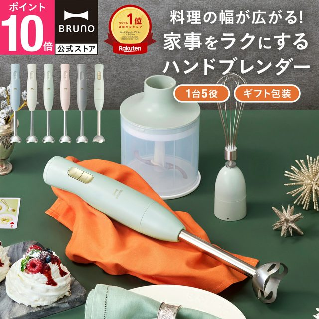

「え⁉︎私に⁉︎」——ママ本人へのギフトという選択肢
出産祝いの中身は、どうしても赤ちゃん用品に寄ります。でもXで受け取り体験を集めると、ママ本人へのギフトには、他の品目にない種類の喜びの声がありました。バスオイルをもらった人の言葉です。「私に少しでも休んでねとくれて、え⁉︎私に⁉︎って感動した」。嬉しさの核は、品物そのものよりも「赤ちゃんへの贈り物の中に、自分宛てがあった」という驚きでした。
数字も同じ方向を向いています。リンベル調査（400名）で「ママをねぎらうアイテム」は、1人目24.3%（7位）から2人目23.3%（5位）へ順位を上げました。割合がほぼ横ばいなのに順位が上がるのは、大型の育児用品やおもちゃが「もう持っている」で抜けていく分、ママ本人向けが相対的に残っていくからです。Xの集計でも、ママ本人へのギフトは嬉しい11件と、品目別では多いほうでした。
この記事は、ママ本人向けだけに絞った1本です。美容・セルフケア系を中心に、調査と実際の声に根拠のあるものだけを、選び方の約束とセットでまとめます。赤ちゃん向けの本体選びは、総合記事「二人目の出産祝いは何が正解？」に譲ります。
→ 本体選びから入りたい方はこちら：二人目の出産祝いは何が正解？ もらった側の本音調査まとめ
なぜ「ママ本人へ」が効くのか
理由は3つあります。
1つ目は、重ならないこと。赤ちゃん用品は、お下がりと1人目の在庫と、他の人からのお祝いで簡単に重なります。ママ本人へのギフトは、その競争の外にあります。「2人目で何がいるか分からないから、確実にママが喜ぶものを」という贈り手の判断が、受け手に好評だった例もありました。
2つ目は、ねぎらいが直接届くこと。GIFTFULのママ向け調査（100人）で嬉しかったものの上位は、お菓子・スイーツ、食べ物・グルメ、デカフェ飲料、入浴剤、スキンケアの順でした。いずれも「産後の自分へのご褒美」として受け取れるものです。おもちゃいろ調査（100人）でも、ママ用のリラックスグッズが上位に入り、「自分のことを気遣ってくれたのが泣きそうになるほど嬉しかった」という理由が挙がっています。
3つ目は、2人目特有の事情です。「長女の時はセルフネグレクト気味でかなり老け込んだから、今回は老いを食い止める」——スキンケアをもらった2人目ママの声です。1人目で自分を後回しにした反省があるからこそ、2人目では「自分のためのもの」が刺さります。
選ぶときの3つの約束
ママ本人向けは、赤ちゃん用品以上に個人差が効く領域です。品目を見る前に、この3つを前提にしてください。
約束1：日持ちするものを選ぶ
ママ用ギフトは、使われるのが遅い前提で選んでください。ハーブティーとバスソルトについて、「1年経ってやっと開封した」「1年がんばった自分へのご褒美に使った」という投稿が2件ありました。育児が落ち着いてから消費されるものなので、賞味期限・使用期限に余裕があるもの、生ものではないものが安全です。
約束2：香りは控えめに、肌に使うものは低刺激系で
香りの好みは分かれますし、産後の肌は普段と違うこともあります。入浴剤・スキンケアは、香りが控えめなもの、低刺激をうたうものを選んでください。いちばん確実なのは、本人がいつも使っているブランドです。聞ける間柄なら、ジャンルではなくブランドまで聞いて構いません（聞き方は後述）。
約束3：授乳を前提にした実用品は避ける
集計でママ向けの目立つ失敗例は、ただ1つ。会社からの出産祝い一式が全部授乳服・授乳ブラで、本人の状況と合わず、転売されたという例です。「ママのため」という形でも、本人の状況を決めつける実用品は外れます。体型に触れる贈り物も同じです。本人から希望があったときにだけ候補にしてください。
カテゴリ別：根拠のあるものだけ
スキンケア——「自分のための時間」を贈る
GIFTFULのママ向け調査では5位、Xでは複数の具体的な声がありました。「ベビ用と私用とそれぞれ用意してくれてて神！！！美容モチベ上がった」という声や、オールインワンジェルに「化粧水塗ってる時間もないんす…うれしい」という声。共通するのは、時短であることと、赤ちゃん用とは別に「私用」があることです。
奮発枠の代表が、SK-IIのフェイシャル トリートメント マスクです。1枚に美容液がたっぷり含まれたシートマスクで、「特別な日のケア」として知られる品です。楽天市場のSK-II 公式ショップでは、6枚入りが税込13,860円、10枚入りが税込20,790円（2026年11月18日確認）。正直に書くと、これはママ向けギフトの中心価格帯（2,000〜5,000円）の大きく外側です。向くのは、きょうだい・親戚からの少し特別な贈り物や、「赤ちゃん用品は揃っているから、ママ本人へだけ奮発する」と決めた場合です。公式ショップには1枚入りの取扱いもあり、まずは1枚から、という入り方もできます（価格はリンク先でご確認ください）。
注意点は、化粧品は肌に合うかどうかがすべてだということです。普段のスキンケアのブランドが分かる相手にはそれを、分からない相手には、肌に直接使うものより、この後の入浴剤や食べ物のほうが安全です。
入浴剤・バスケア——「休んでね」を形にする
GIFTFULのママ向け調査で4位。冒頭のバスオイルの声（「休んでねとくれて、え⁉︎私に⁉︎って感動した」）が示すように、入浴剤は「休んでほしい」というメッセージを運ぶのに向いた品目です。産後しばらくは湯船にゆっくり浸かれない時期もありますが、だからこそ日持ちする入浴剤は「落ち着いたら使ってね」という先付けのねぎらいになります。
具体商品としては、重炭酸タブレット入浴剤と今治タオルのギフトセット（pureLi）が、記事1とランキング記事で紹介済みです。入浴剤とタオルの組み合わせは、約束1（日持ち）と約束2（肌へのいたわり）の両方に沿います。価格帯は2,000〜5,000円の中心帯に収まります。

パジャマ・ルームウェア——毎日使う「私のもの」
Xでは、ジェラートピケのパジャマに「前開きボタンも授乳しやすいし本当に最高」という声、リカバリーウェアに「『ママは休める時に休んでね』という言葉と一緒にもらった」という声がありました。娘のパジャマが羨ましかったタイミングで自分用が届いて喜ばれた、という例もあります。パジャマはサイズ感の外れが少なく、産後の在宅時間の長さに直接効きます。
ジェラートピケのワンピースタイプは楽天市場で1万円前後の取扱いがあり、こちらも中心価格帯より上の「奮発枠」です（価格は取扱店により異なります）。サイズはフリーサイズのものを選ぶと外しにくくなります。前開きかどうかは、授乳の有無を決めつける話ではなく、単に着替えやすさの違いとして選んでください。
デカフェ・飲み物——授乳中でも楽しめる配慮
GIFTFULのママ向け調査で3位。デカフェのハーブティーをもらった人は、「出産頑張ったのは（私）だから、（私）にプレゼントしたい」と言われて、「産後メンタルで感情がグラグラだったので嬉しすぎて泣きそうになった」と書いています。カフェインを避けている時期に「飲めるものを選んでくれた」という配慮そのものが伝わるカテゴリです。
逆に、通常のコーヒーやアルコールは「産後・授乳期に飲めなかった」困り例として挙がっています。飲み物を贈るなら、デカフェ・ノンカフェインを明記して選んでください。この節は特定の商品リンクを置かず、選び方の解説のみとします。
ママが食べるもの——食事系は「ママ宛て」にもなる
GIFTFULのママ向け調査では、お菓子・スイーツが1位、食べ物・グルメが2位でした。食事系ギフトは本来「家族の食事支援」ですが、受け取り側では「自分の食事が後回しになる時期に、温めるだけで食べられるものがある」という、ママ本人の救済として語られています。
記事1・記事2で紹介済みの2つは、そのままママ宛てにも使えます。Soup Stock Tokyoの冷凍スープ（税込5,400円）は、Xで「困ったらこれを送っておくれ」と受け取り側が他人に推薦する形で語られました。アマノフーズのフリーズドライ詰め合わせ（税込5,130円）は常温保存ができ、約束1（日持ち）の点でも優秀です。スイーツを添える場合は、日持ちする焼き菓子など常温のものを選んでください。
時短の補助枠として、BRUNOのマルチスティックブレンダー（税込7,700円、2026年11月18日再確認）も挙げておきます。本来は離乳食・時短グッズとして調査で支持された品ですが（ランキング記事11位）、スープやポタージュを作る道具として、ママ自身の食事づくりを軽くする面もあります。すでに持っている家庭も多いので、確認できる間柄でどうぞ。


→ 食事系を本体にする場合はこちら：二人目の出産祝いに食事ギフトが外さない理由
ハンドクリーム等の小さなケア——同梱枠として
ハンドクリームやリップなどの小さなケア用品は、単独の主役にするより、本体ギフトへの同梱枠として向きます。水仕事で手が荒れる時期に実用性があり、「ママ宛ても入っていた」という形を作りやすいからです。選ぶなら低刺激・無香料に近いもの。この節も商品リンクは置かず、考え方のみとします。
予算の考え方：中心は2,000〜5,000円、奮発枠は分けて考える
ママ本人向けの中心価格帯は2,000〜5,000円です（調査集計の目安）。入浴剤、デカフェ、スイーツ、食事系のセットは、この範囲に収まります。本体（赤ちゃん向け）と組み合わせる場合は、本体＋ママ分2,000〜3,000円の同梱が分量感として標準です。
一方で、この記事で挙げたSK-IIのパック（6枚入り税込13,860円・10枚入り税込20,790円）やジェラートピケのパジャマ（1万円前後）は、中心帯の外側にある「奮発枠」です。奮発枠が成立するのは、相手がきょうだい・親戚である場合、職場の連名で一人あたりの負担が小さい場合、そして「赤ちゃん用品は揃っているから、ママ本人へだけ贈る」と決めた場合です。逆に、友人への通常のお祝いで本体に加えて奮発枠まで重ねると、相手のお返しの負担が増えます。金額の分かりやすい美容品は、内祝いの計算もしやすいので、その点でも相手との関係で判断してください。
→ 予算全体の組み立て方はこちら：二人目の出産祝い 予算別ガイド
本人の希望を聞く、という正解
ママ本人向けは好みの個人差が大きいからこそ、「聞く」ことが近道です。ハッピー・ノートの2人目向け調査では、贈り方として「欲しいものを聞く」が約42.3%と最多でした。聞き方のコツは、品物ではなくジャンルだけを聞くことです。「甘いものと、ゆっくりお風呂に入るのと、どっちが嬉しい？」くらいなら、相手も答えやすく、選ぶ楽しみは贈る側に残ります。
スキンケアについては、ジャンルに加えて「いつも使っているブランド」を聞けると精度が大きく上がります。前述のとおり、化粧品は肌に合うかどうかがすべてだからです。聞けない間柄では、肌に直接使うものから一段下がって、入浴剤・デカフェ・食事系に寄せるのが安全圏です。
渡すときは、短いメッセージを添えてください。「赤ちゃんのお祝いとは別に、あなたにも贈りたくて」という一言があるだけで、「自分宛てがあった」という驚きが、確実なねぎらいになります。
避けたいこと
- 授乳服・授乳ブラの一式：本人の状況と合わず転売された、集計で唯一の目立つ失敗例です。本人の希望がある場合を除いて避けてください。
- 香りの強いもの：好みが割れるうえ、産後の体調では強く感じられることがあります。
- 通常コーヒー・アルコール：産後・授乳期に飲めない困り例として挙がっています。
- 体型に触れる贈り物：産後ケアを名目にしても、サイズや体型を前提にする品は避けてください。
- 期限の短い生もの：使われるのが遅くなりがちなカテゴリです。日持ちしない食品は、渡すタイミングを合わせられる場合だけにしてください。
よくある質問
ママ本人へのギフトだけを贈るのは失礼ですか？
形としては成立します。特に2人目で「用品は揃っている」と分かっている場合は、ママ本人向け単独のほうが喜ばれたという声もあります。ただし、赤ちゃんへの一言（メッセージカードで「ご出産おめでとうございます」と添える等）は忘れずに。本体と組み合わせる場合は、ママ分は2,000〜3,000円の同梱が標準です。
1人目の出産祝いでも、ママ本人向けは有効ですか？
有効です。リンベル調査でも1人目で24.3%（7位）に入っています。ただし1人目は赤ちゃん用品自体が初めてで喜ばれる時期なので、本体＋ママ分の同梱という形が中心になります。ママ本人向けの比重が上がるのは、用品が揃う2人目以降です。
スキンケアを贈りたいけれど、肌に合うか心配です
心配な場合は、無理に当てにいかないでください。いつも使っているブランドを聞ける間柄ならそれが正解です。聞けない場合は、顔に使うものではなく、入浴剤のような「洗い流す・短時間触れる」ものか、デカフェ・食事系に寄せると外しにくくなります。
渡すタイミングはいつがいいですか？
本体と同じく、生後7日〜1か月が一般的な目安です。ママ本人向けは日持ちするものが中心なので、退院直後の慌ただしい時期を外し、少し落ち着いてから届く形でも問題ありません。「落ち着いたら使ってね」の一言と相性がいいカテゴリです。
ママの本音コメント
※以下の声は、本文で紹介した公開アンケート・X上の受け取り体験から、印象に残った言葉をそのまま抜き出したものです。特定の個人への取材ではありません。
受け取り側の声：バスオイルに「私に？」
「私に少しでも休んでねとくれて、え⁉︎私に⁉︎って感動した」
（入浴剤・バスケアの節より。Xの受け取り体験から）
受け取り側の声：デカフェのハーブティーに泣きそうになった
「産後メンタルで感情がグラグラだったので嬉しすぎて泣きそうになった」
（デカフェ・飲み物の節より。「出産頑張ったのは私だから、私にプレゼントしたい」と言われて）
受け取り側の声：ベビ用と私用を分けて用意してくれた
「ベビ用と私用とそれぞれ用意してくれてて神！！！美容モチベ上がった」
（スキンケアの節より。Xの受け取り体験から）
受け取り側の声：「休んでね」の言葉と一緒に
「『ママは休める時に休んでね』という言葉と一緒にもらった」
（パジャマ・ルームウェアの節より。リカバリーウェアへの声）
まとめ
- ママ本人へのギフトは、リンベル調査で2人目5位に浮上し、Xでも嬉しい11件。喜びの核は「自分宛てがあった」という驚きと、ねぎらいが直接届くことです。
- 選ぶときの約束は3つ。日持ちするもの、香り控えめ・低刺激、授乳前提の一式は避ける。
- 中心価格帯は2,000〜5,000円。SK-IIのパックやジェラートピケのパジャマは「奮発枠」として、相手との関係で使い分けてください。
- 好みが分からないときは、ジャンルだけ聞く。それがこのカテゴリのいちばんの近道です。
※この記事にはアフィリエイト広告（PR）が含まれます。記事内のリンクからご購入いただくと、当サイトに紹介料が支払われる場合があります。